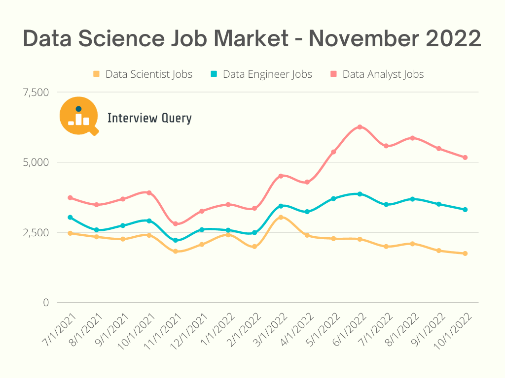

Artificial Intelligence has emerged as a cornerstone of technological advancement, reshaping industries and societies worldwide. This abstract explores the transformative innovations, ethical considerations, and societal impacts. AI technologies, ranging from machine learning and natural language processing to robotics, have demonstrated remarkable capabilities in automating complex tasks, optimizing decision-making processes, and fostering unprecedented levels of efficiency across diverse domains. As AI continues to evolve, its integration into healthcare, finance, transportation, and other sectors holds the promise of addressing longstanding challenges and unlocking new possibilities. However, AI raises multiple ethical concerns that. Issues related to transparency, accountability, and the potential for job displacement. Striking a balance between innovation and ethical considerations is crucial to ensure that AI technologies contribute positively to society.
In our ever-evolving society, the pervasive influence of artificial intelligence (AI) is reshaping the way we live and work. This article informs all about transformative impact of AI on our daily lives, exploring how it has become an integral force in supercharging creations and assignments beyond conventional human capacities. As we navigate the features and see how the diminishing reliance on human involvement in certain job functions becomes evident. Join me in unraveling the intricate interplay between human ingenuity and the accelerating force of AI.

FIGURE 1 SHOWS THE COUNTRY'S RELYING ON AI FOR THEIR PRODUCTIVITY
Creating leads and growing revenue has been made easier with the help of excellent AI sales and marketing tools, that enable you take your business to the next level. These tools can help you build an email list, reach out to them with video assets, and explore opportunities to analyze your client interactions. For example, using Seamless.AI‘s built-in search engine, you can leverage the power of AI to update your contact lists with the most up-to-date contact information. Additionally, using software such as Ocoya, you can create social media posts and schedule them, giving you more time to focus on other aspects of your business. According to the U.S. Bureau of Labor Statistics (BLS), there are more than 250,000 graphic design jobs in the United States. However, the number of individual designers is projected to decrease by about 4% between now and 2029. These statistics imply that these features of artificial intelligence produce a decline in demand for various professions, including roles in digital marketing, graphic design, and marketing consultancy.
In the past, if you wanted to create a custom plugin or an entire static HTML, you’d need to prepare yourself for a long project. With the number of AI coding assistants hitting the market at the speed of light, you no longer have to spend countless hours coding on your own. Using software such as GitHub Copilot, you can code faster and more efficiently than ever before. The best part about these coding assistants is the majority of them will work alongside your favorite code editor, so you don’t have to spend time learning a new platform. The overall data science job market is down 15% year over year when you factor in analysts, ML engineers, and data-based product managers. But more importantly over the last 18 months and noticed a 26% drop year over year from October 2021 to October 2022 in the number of data scientist job openings. This signifies that this element of artificial intelligence results in a decrease in demand for various occupations, such as roles in software engineering IT technology and data science.
FIGURE 2 SHOWS THE TREND IN DATA SCIENCE JOBS OVER THE YEARS
AI avatar generators are all the rage right now. Thanks to companies like Picsart, Lensa AI, and Synthesia, you can create static and video avatars. Whether you’re looking to establish a more professional representation for your company, revamp your social media avatars, or even fashion lifelike 3D avatars for marketing videos or online business chat, these tools have you covered. Some Digital Animation Jobs Have Been Victims of AutomationAll of this clever management and automation has meant that some labour-intensive digital animation jobs have seen a decline. Compositor was an extremely popular position in the early period of computer graphics but saw sharp decline after 2011. This indicates that this aspect of artificial intelligence leads to a reduction in the demand for several professions, including positions in 3D modelling, Character designing and animating.
FIGURE 3 SHOWS CHARACTERS GENERATED THROUGH AI USING A SCRIPT
Artificial Intelligence (AI) is reshaping the landscape of education, offering innovative solutions to age-old challenges. As we embrace the digital era, AI is proving to be a game-changer, enhancing the learning experience for both students and educators. For example The UK government is investing £2 million in the Oak National Academy to develop AI-powered teaching tools for teachers in England. This initiative aims to provide personalized AI lesson-planning assistance to every teacher, helping them plan lessons, create quizzes, and reduce workloads. The investment follows a successful pilot of AI-powered quiz builders and lesson planners, with positive feedback from teachers. The funds will support Oak National Academy in further improving these tools and making them available for free to teachers across England. The goal is to harness AI's potential to enhance the education system, reduce teacher workloads, and improve the quality of teaching resources. The government plans to collaborate with teachers and experts to develop solutions for minimizing teachers' working hours. The announcement coincides with an AI hackathon to explore AI applications in education. The government will also publish the results of its AI call for evidence, gathering input on the risks, ethical considerations, and possibilities of AI in education. Suggesting that in certain cases these features of artificial intelligence produce a decline in demand for various professions, such as roles in online teaching and tutoring.
FIGURE 4 SHOWS WHAT TEACHING COULD LOOK LIKE IN A FEW YEARS
In conclusion, in our ever-evolving society, the pervasive influence of artificial intelligence (AI) is reshaping the way we live, work, and even educate. This article has delved into the transformative impact of AI on our daily lives, illustrating how it has emerged as an integral force in supercharging creations and assignments beyond the conventional capacities of humans. As we navigated through the various features of AI, particularly in the aspects of sales, marketing, coding, and data science, a recurring theme emerged a decrease in the reliance on human involvement for certain jobs. The utilization of AI in sales and marketing tools streamlines lead generation and revenue growth, while the advent of AI coding assistants like GitHub Copilot revolutionizes the coding landscape. The data science job market, despite its overall decline, reveals that the role itself is evolving into multiple titles, reflecting the transformative impact of AI. Similarly, in the creative field of digital animation, certain jobs have witnessed a decline due to clever management and automation facilitated by AI. In the realm of education, AI emerges as a game-changer, offering innovative solutions to challenges. The UK government's investment in AI-powered teaching tools for the Oak National Academy exemplifies how AI can enhance the learning experience for both students and educators. However, this positive trajectory also signals a shift in demand for certain professions, such as online teaching and tutoring. In essence, as we embrace the possibilities presented by artificial intelligence, we must also navigate the evolving job market and anticipate the changing dynamics in various sectors, professions and industries. Which leaves us wondering is AI our biggest threat or are we biting the hand that feeds us
Mclean, D. (August 14, 2023) What Can AI Do? 15 Common Uses in 2023. Available at: What Can AI Do? 15 Common Uses in 2023 (elegantthemes.com) (Accessed: November 3, 2023).
Department for Education, The Rt Hon Rishi Sunak MP, and The Rt Hon Gillian Keegan MP (30 October, 2023) New support for teachers powered by Artificial Intelligence. Available at: New support for teachers powered by Artificial Intelligence - GOV.UK (www.gov.uk) (Accessed: November 3, 2023).
Dodhia, Z. (Oct 26, 2021) Will The Demand For Graphic Designers Diminish In The Near Future?. Available at: Will The Demand For Graphic Designers Diminish In The Near Future? (forbes.com) (Accessed: November 3, 2023).
The Data Science Job Market is Disappearing. Available at: Interview Query | The Data Science Job Market is Disappearing (Accessed: November 3, 2023).
Gowanlock, J. (Sep 7, 2020) How Jobs in the Animation Industry are Changing . Available at: How Jobs in the Animation Industry are Changing | by Jordan Gowanlock | The Startup | Medium (Accessed: November 3, 2023).